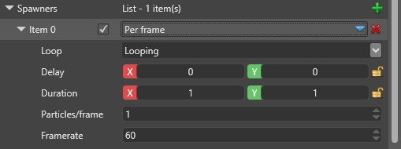

Генераторы (Spawners)
Начинающий Художник Программист
Генераторы частиц задают: когда, сколько и как быстро испускаются частицы. Для излучателей требуется как минимум один генератор, но они могут содержать несколько генераторов с разными настройками.
За секунду (Per second)
Выпускает фиксированное количество частиц в секунду. Он балансирует и интерполирует их и сохраняет стабильность даже при изменении или падении частоты кадров. Например, при скорости 20 частиц в секунду генератор создает одну частицу каждые три кадра для игр с частотой 60 кадров в секунду и две частицы на каждые три кадра (пропуская каждый третий кадр) для игр с частотой 30 кадров в секунду.

| Свойство | Описание |
|---|---|
| Зацикливание (Loop) | Чтобы генератор зацикливался по достижении конца своего времени, выберите Looping (по умолчанию). Чтобы цикл генератора не прерывался, выберите Looping, no delay. Чтобы генератор отработал один раз и затем остановился, выберите One shot. |
| Задержка (Delay) | Как долго (в секундах) генератор ждет перед генерацией. Это случайное значение между значениями X (минимальное) и Y (максимальное). |
| Продолжительность (Duration) | Как долго (в секундах) генератор создает частицы. По окончании периода генератор либо запускается снова, либо останавливается, в зависимости от свойства Зацикливания (Loop). |
| Частицы (Particles ) | Количество частиц, создаваемых в секунду. Это может быть значение float (например 36.875). |
За кадр (Per frame)
Выпускает фиксированное количество частиц за кадр, независимо от частоты кадров. Это может быть полезно, если вам требуется фиксированное количество частиц - например, ровно один на кадр, что полезно для траекторий движения и лент.

| Свойство | Описание |
|---|---|
| Зацикливание (Loop) | Чтобы генератор зацикливался по достижении конца своего времени, выберите Looping (по умолчанию). Чтобы цикл генератора не прерывался, выберите Looping, no delay. Чтобы генератор отработал один раз и затем остановился, выберите One shot. |
| Задержка (Delay) | Как долго (в секундах) генератор ждет перед генерацией. Это случайное значение между значениями X (минимальное) и Y (максимальное). |
| Продолжительность (Duration) | Как долго (в секундах) генератор создает частицы. |
| Частицы (Particles ) | Количество частиц, создаваемых за кадр. Значение может быть float, включая значения меньше 1, в этом случае новая частица создается каждые несколько кадров. |
| Частота кадров (Framerate) | Это необходимо только для оценки, когда движок рассчитывает максимальное количество частиц. |
Всплеск (Burst)
Выпускает все частицы одним залпом.

| Свойство | Описание |
|---|---|
| Зацикливание (Loop) | Чтобы генератор зацикливался по достижении конца своего времени, выберите Looping (по умолчанию). Чтобы цикл генератора не прерывался, выберите Looping, no delay. Чтобы генератор отработал один раз и затем остановился, выберите One shot. |
| Задержка (Delay) | Как долго (в секундах) генератор ждет перед созданием. Это случайное значение между значениями X (минимальное) и Y (максимальное). |
| Продолжительность (Duration) | Как долго (в секундах) генератор создает частицы. |
| Частиц на всплеск (Particles/burst) | Количество частиц, созданных в каждом всплеске. |
Расстояние (Distance)
Излучает частицы в зависимости от расстояния, пройденного излучателем. Если излучатель не движется, он не создает никаких частиц.
| Свойство | Описание |
|---|---|
| Зацикливание (Loop) | Чтобы генератор зацикливался по достижении конца своего времени, выберите Looping (по умолчанию). Чтобы цикл генератора не прерывался, выберите Looping, no delay. Чтобы генератор появился один раз и затем остановился, выберите One shot. |
| Задержка (Delay) | Как долго (в секундах) генератор ждет перед созданием. Это случайное значение между значениями X (минимальное) и Y (максимальное). |
| Продолжительность (Duration) | Как долго (в секундах) генератор создает частицы. |
| Частиц на единицу (Particles/unit) | Количество частиц, создаваемых за каждую единицу расстояния, на которое перемещается генератор. Если вам нужно меньше одной частицы на единицу расстояния, можно использовать дроби. Скорость корректируется в зависимости от масштабирования |
From parent (От родителя)
Выпускает частицы на основе других частиц (родителей). Когда в родительской частице выполняются определенные условия, генератор создает частицы.
| Свойство | Описание |
|---|---|
| Зацикливание (Loop) | Чтобы генератор зацикливался по достижении конца своего времени, выберите Looping (по умолчанию). Чтобы цикл генератора не прерывался, выберите Looping, no delay. Чтобы генератор отработал один раз и затем остановился, выберите One shot. |
| Задержка (Delay) | Как долго (в секундах) генератор ждет перед созданием. Это случайное значение между значениями X (минимальное) и Y (максимальное). |
| Продолжительность (Duration) | Как долго (в секундах) генератор создает частицы. |
| Родительский излучатель (Parent emitter ) | Родительский излучатель, который должен совпадать с именем излучателя, установленным на этом излучателе. |
| Группа контроля появления (Spawn Control Group) | Это поле будет добавлено к родительским частицам для более точного контроля над тем, сколько дочерних частиц какая родительская частица создает. Есть 4 группы, из которых вы можете выбрать и они должны соответствовать группам инициализаторов, если инициализаторам требуется управление. |
| Частиц на триггер (Particles/trigger) | Сколько частиц (мин. и макс.) порождается родительским объектом каждый раз, когда выполняется условие срабатывания. |
| Триггер появления частиц (Particle Spawn Trigger) | Какое условие запускает появление дочерних частиц (подробнее см. ниже) |
Триггер появления частиц (Particle Spawn Trigger)
- При рождении (On Birth) - Дочерние частицы появляются один раз при появлении родительской частицы (один раз на родителя).
- При исчезновении (On Death) - Дочерние частицы появляются один раз, когда исчезает родительская частица (один раз на родителя).
- Расстояние (Distance) - Дочерние частицы появляются на расстоянии, пройденном родительской частицей.
- При попадании (On Hit) - Родительские частицы должны реализовать Collision Updater. Дочерние частицы появляются, когда родительская частица сталкивается с поверхностью.
- Продолжительность существования (Lifetime) - Дочерние частицы появляются, когда продолжительность существования родительской частицы находится между двумя пределами, A и B, выраженными в виде нормализованных значений (от 0 до 1) за время жизни частицы. Если А < В, период равен 0..(A..B)..1, если B > A, то период меняется на обратный (0..B)..(A..1). Этот метод менее точен, чем условия On Birth/On Death.